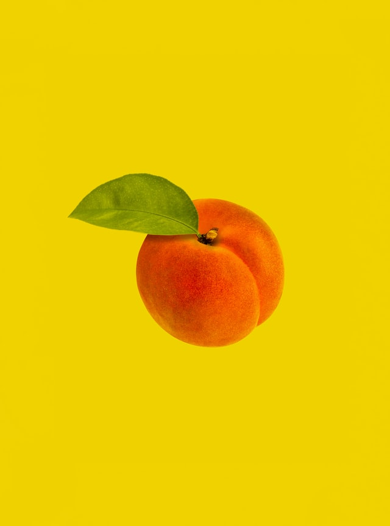

Peach Salad

Description
For the peach lovers!🍑
Ingredients
- 6 peaches
- Lemon juice
- 2 tbsp. Carnation Milk
- ½ cup cream cheese
- Lettuce leaves
- ½ cup mayonnaise
Steps
- Peel and cut peaches in half (or use halves of canned peaches).
- Sprinkle with lemon juice to prevent discoloring.
- Place 2 halves on lettuce leaf on each salad plate.
- Soften cheese with the Carnation Milk and combine with the mayonnaise.
- Put mixture into a pastry bag and fill the hollows of peaches leaving a rose on top, or simply fill carefully with a spoon.
- Serves 6.
From the book of : My Hundred Favorite Recipes, by Mary Blake
Check out for the other recipes from the book